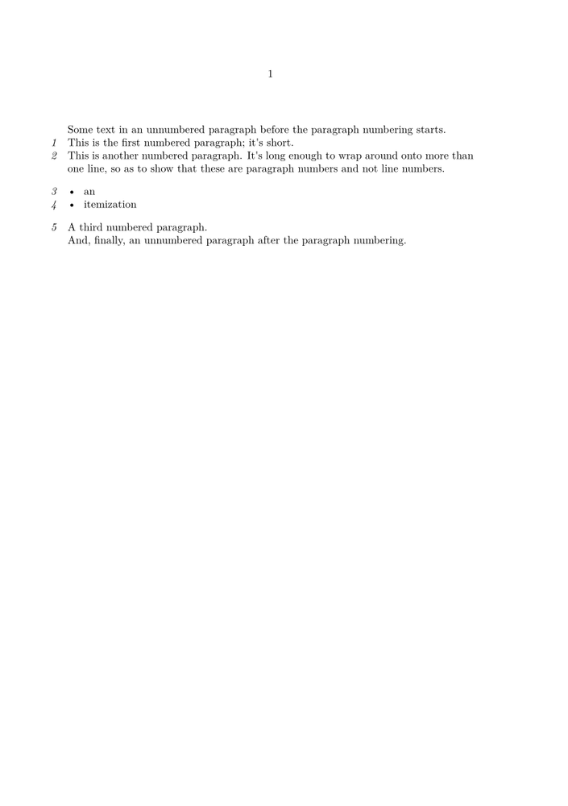

Syntax (autogenerated)
| \setupparagraphnumbering[...=...,...] | |
| state | start stop line reset |
| distance | dimension |
| style | style command |
| color | color |
Syntax
| \setupparagraphnumbering[...,...=...,...] | |
| state | start stop reset line |
| style | normal bold slanted boldslanted type cap small... command |
| distance | dimension |
Description
Number every TeX paragraph — that is, everything that ends in \par. This includes formulas and itemization items.
Example
-
\setuppapersize[A5] \starttext Some text in an unnumbered paragraph before the paragraph numbering starts. \setupparagraphnumbering[state=start,style=italic,distance=0pt] This is the first numbered paragraph; it's short. This is another numbered paragraph. It's long enough to wrap around onto more than one line, so as to show that these are paragraph numbers and not line numbers. \startitemize[packed] \item an \item itemization \stopitemize A third numbered paragraph. \setupparagraphnumbering[state=stop] And, finally, an unnumbered paragraph after the paragraph numbering. \stoptext
- 
See also
- Paragraph numbering for more on this command.
- Paragraph referencing for the t-pararef module, which lets you specify that multiple TeX paragraphs belong to the same ‘block of thought’ paragraph.
Help from ConTeXt-Mailinglist/Forum
All issues with: